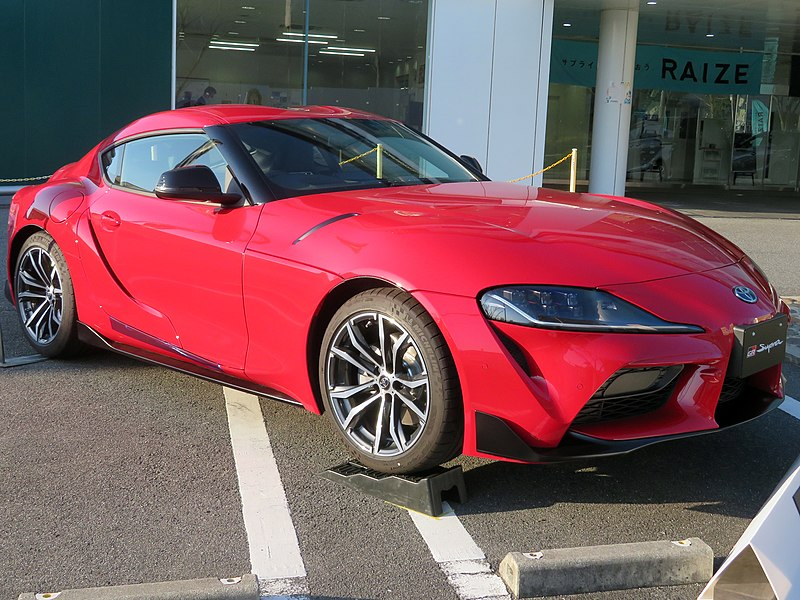

WEBCARS
Supra
La variante SUV, denominada Corolla Cross, fue presentada en Tailandia en julio de 2020. Se fabrica en Tailandia, Taiwán y Brasil exclusivamente para los mercados de Latinoamérica y el sudeste asiático, donde comenzó a venderse en marzo de 2021. Basada en la misma plataforma del Corolla de duodécima generación, es una SUV compacta que ofrece motor convencional o híbrido, caja automática y tracción delantera simple.